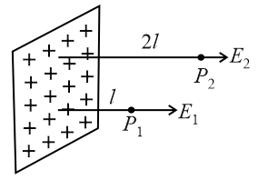

Filter questions
Q1
CHEM-2024-0101-S2-Q044
2024 | 09 Apr | Shift 2
—
MCQ
Chemistry · Coordination Compounds
The coordination environment of Ca2+ ion in its complex with EDTA4− is:
Answer: C
Q2
PHY-2021-0101-S1-Q029
2021 | 25 Jul | Shift 1
—
Integer
Physics · Current Electricity
An inductor of 10 mH is connected to a 20 V battery through a resistor of 10 kΩ and a switch. After a long time, when maximum current is set up in the circuit, the current is switched off. The current in the circuit after x 1 μs is mA. Then x is equal to ______. (Take e−1 = 0.37) 100
Answer: 74
Q3
PHY-2021-0101-S1-Q001
2021 | 17 Mar | Shift 1
—
MCQ
Physics · Semiconductors & Electronic Devices
A car accelerates from rest at a constant rate α for some time after which it decelerates at a constant rate β to come to rest. If the total time elapsed is t seconds, the total distance travelled is:
Answer: Option Question
Q4
PHY-2025-0101-S2-Q008
2025 | 23 Jan | Shift 2
—
MCQ
Physics · Biomolecules
Let the point A divide the line segment joining the points P(−1, −1, 2) and Q(5, 5, 10) internally in the ratio − − − − → → → → r: 1(r > 0). If O is the origin and (OQ ⋅OA) −1 |OP × OA|2 = 10, then the value of r is: 5
Answer: D
Q5
PHY-2022-0101-S2-Q027
2022 | 27 Jun | Shift 2
—
Integer
Physics · Current Electricity
In the given circuit 'a' is an arbitrary constant. The value of m for which the equivalent circuit resistance is minimum, will be √x. The value of x is _____. 2
Answer: 3
Q6
PHY-2022-0101-S2-Q028
2022 | 25 Jun | Shift 2
—
Integer
Physics · Current Electricity
The length of a given cylindrical wire is increased to double of its original length. The percentage increase in the resistance of the wire will be _____ %

Answer: 300
Q7
MATH-2022-0101-S1-Q063
2022 | 24 Jun | Shift 1
—
MCQ
Mathematics · Sequences & Series
If {ai}n, where n is an even integer, is an arithmetic progression with common difference 1, and i=1 n ∑n ai = 192, ∑ 2 a2i = 120, then n is equal to i=1 i=1
Answer: C
Q8
PHY-2021-0101-S2-Q014
2021 | 26 Aug | Shift 2
—
MCQ
Physics · Current Electricity
If you are provided a set of resistances, 2 Ω, 4 Ω, 6 Ω and 8 Ω. Connect these resistances to obtain an 46 equivalent resistance of 3 Ω.
Answer: C
Q9
CHEM-2025-0101-S1-Q042
2025 | 23 Jan | Shift 1
—
MCQ
Chemistry · Current Electricity
Regarding self-inductance: A. The self-inductance of the coil depends on its geometry. B. Self-inductance does not depend on the permeability of the medium. C. Self-induced e.m.f. opposes any change in the current in a circuit. D. Self-inductance is electromagnetic analogue of mass in mechanics. E. Work needs to be done against self-induced e.m.f. in establishing the current. Choose the correct answer from the options given below:

Answer: C
Q10
PHY-2021-0101-S2-Q026
2021 | 25 Feb | Shift 2
—
Integer
Physics · Electrostatics
The peak electric field produced by the radiation coming from the 8 W bulb at a distance of 10 m is x √μ0c V m−1. The efficiency of the bulb is 10% and it is a point source. The value of x is, 10 π
Answer: 2
Q11
CHEM-2024-0101-S2-Q058
2024 | 29 Jan | Shift 2
—
Integer
Chemistry · Electrochemistry
A constant current was passed through a solution of AuCl− ion between gold electrodes. After a period of 4 10.0 minutes, the increase in mass of cathode was 1.314 g. The total charge passed through the solution is ___ ×10−2 F. (Given atomic mass of Au = 197)
Answer: 2
Q12
CHEM-2025-0101-S1-Q054
2025 | 23 Jan | Shift 1
—
Integer
Chemistry · Periodic Properties
The element that does not belong to the same period of the remaining elements (modern periodic table) is: (1) Iridium (2) Platinum (3) Osmium (4) Palladium

Answer: 4
Q13
CHEM-2024-0101-S2-Q060
2024 | 01 Feb | Shift 2
—
Integer
Chemistry · Biomolecules
The number of tripeptides formed by three different amino acids using each amino acid once is _______.

Answer: 6
Q14
PHY-2021-0101-S2-Q029
2021 | 24 Feb | Shift 2
—
Integer
Physics · Electrostatics
An electromagnetic wave of frequency 3 GHz enters a dielectric medium of relative electric permittivity 2.25 ×10−2 from vacuum. The wavelength of this wave in that medium will be _________ cm.
Answer: 667
Q15
CHEM-2024-0101-S1-Q037
2024 | 06 Apr | Shift 1
—
MCQ
Chemistry · Semiconductors & Electronic Devices
At −20∘C and 1 atm pressure, a cylinder is filled with equal number of H2, I2 and HI molecules for the reaction H2( g) + I2( g) ⇌2HI(g), the Kp for the process is x × 10−1. x = _____ [Given: R = 0.082 L atm K−1 mol−1 ]
Answer: B
Q16
CHEM-2023-0101-S2-Q033
2023 | 13 Apr | Shift 2
—
MCQ
Chemistry · Chemical Bonding & Molecular Structure
Given below are two statements: Statement I: and both possess V-shaped structure SO2 H2O Statement II: The bond angle of SO2 is less than that of H2O. In the light of the above statements, choose the most appropriate answer from the options given below:
Answer: D
Q17
MATH-2021-0101-S1-Q064
2021 | 17 Mar | Shift 1
—
MCQ
Mathematics · Binomial Theorem
If the fourth term in the expansion of (x + xlog2 x) 7 is 4480, then the value of x where x ∈N is equal to:
Answer: A
Q18
CHEM-2021-0101-S1-Q049
2021 | 17 Mar | Shift 1
—
MCQ
Chemistry · Biomolecules
With respect to drug-enzyme interaction, identify the wrong statement:
Answer: C
Q19
PHY-2021-0101-S1-Q025
2021 | 25 Feb | Shift 1
—
Integer
Physics · Electrostatics
The electric field in a region is given by → = ( 3 E0ˆi + 4 E0ˆj) N C−1. The ratio of flux of reported field E 5 5 through the rectangular surface of area 0.2 m2 (parallel to y −z plane) to that of the surface of area 0.3 m2 (parallel to x −z plane) is a: b = a: 2, where a =? [Here ˆi, ˆj and ˆk are unit vectors along x, y and z -axes respectively]
Answer: 1
Q20
PHY-2022-0101-S1-Q025
2022 | 24 Jun | Shift 1
—
Integer
Physics · Current Electricity
In a potentiometer arrangement, a cell gives a balancing point at 75 cm length of wire. This cell is now replaced by another cell of unknown emf. If the ratio of the emf's of two cells respectively is 3: 2, the difference in the balancing length of the potentiometer wire in above two cases will be _____. cm
Answer: 25
Q21
PHY-2022-0101-S1-Q008
2022 | 25 Jun | Shift 1
—
MCQ
Physics · Electrostatics
In the figure, a very large plane sheet of positive charge is shown. P1 and P2 are two points at distance l and 2l from the charge distribution. If σ is the surface charge density, then the magnitude of electric fields E1 and E2 at P1 and P2 respectively are σ σ 2σ σ

Answer: C
Q22
PHY-2023-0101-S2-Q029
2023 | 30 Jan | Shift 2
—
Integer
Physics · Semiconductors & Electronic Devices
The output Y for the inputs A and B of circuit is given by Truth table of the shown circuit is: ⎡ ⎤ ⎡ ⎤ (1) A B Y (2) A B Y 0 0 1 0 0 1 0 1 1 0 1 0 ⎣ 1 0 1 ⎦ ⎣ 1 0 0 ⎦ 1 1 0 1 1 1 ⎡ A B Y ⎤ ⎡ A B Y ⎤ (3) (4) 0 0 0 0 0 0 0 1 1 0 1 1 ⎣ 1 0 1 ⎦ ⎣ 1 0 1 ⎦ 1 1 1 1 1 0
Answer: 3
Q23
CHEM-2024-0101-S2-Q059
2024 | 06 Apr | Shift 2
—
Integer
Chemistry · Chemical Bonding & Molecular Structure
Total number of species from the following with central atom utilising sp2 hybrid orbitals for bonding is _____. NH3, SO2, SiO2, BeCl2, C2H2, C2H4, BCl3, HCHO, C6H6, BF3, C2H4Cl2
Answer: 6
Q24
PHY-2021-0101-S1-Q019
2021 | 17 Mar | Shift 1
—
MCQ
Physics · Semiconductors & Electronic Devices
The output of the given combination gates represents:
Answer: B
Q25
PHY-2024-0101-S2-Q020
2024 | 04 Apr | Shift 2
—
MCQ
Physics · Semiconductors & Electronic Devices
Which of the diode circuit shows correct biasing used for the measurement of dynamic resistance of p-n junction diode:

Answer: C
Q26
PHY-2021-0101-S1-Q011
2021 | 31 Aug | Shift 1
—
MCQ
Physics · Current Electricity
Consider a galvanometer shunted with 5 Ω resistance and 2% of current passes through it. What is the resistance of the given galvanometer?
Answer: A
Q27
CHEM-2025-0101-S1-Q033
2025 | 22 Jan | Shift 1
—
MCQ
Chemistry · Semiconductors & Electronic Devices
Which of the following circuits represents a forward biased diode? Choose the correct answer from the options given below:
Answer: D
Q28
PHY-2024-0101-S2-Q007
2024 | 27 Jan | Shift 2
—
MCQ
Physics · Semiconductors & Electronic Devices
Given below are two statements: one is labelled as Assertion
Answer: C
Q29
CHEM-2024-0101-S1-Q050
2024 | 31 Jan | Shift 1
—
MCQ
Chemistry · Biomolecules
Match List I with List II List-I List-II A. Glucose/NaHCO3 / ∆ I. Gluconic acid B. Glucose/HNO3 II. No reaction C. Glucose/HI / ∆ III. n-hexane D. Glucose/Bromine water IV. Saccharic acid Choose the correct answer from the options given below:
Structured List-I / List-II view
| Label | List-I | List-II | Match |
|---|---|---|---|
| A | Glucose/NaHCO3 / ∆ | Gluconic acid | I |
| B | Glucose/HNO3 | No reaction | II |
| C | Glucose/HI / ∆ | n-hexane | III |
| D | Glucose/Bromine water | Saccharic acid | IV |
Answer: B
Q30
PHY-2023-0101-S2-Q022
2023 | 13 Apr | Shift 2
—
Integer
Physics · Semiconductors & Electronic Devices
A light rope is wound around a hollow cylinder of mass 5 kg and radius 70 cm. The rope is pulled with a force of 52.5 N. The angular acceleration of the cylinder will be _____ rad s−2.
Answer: 15